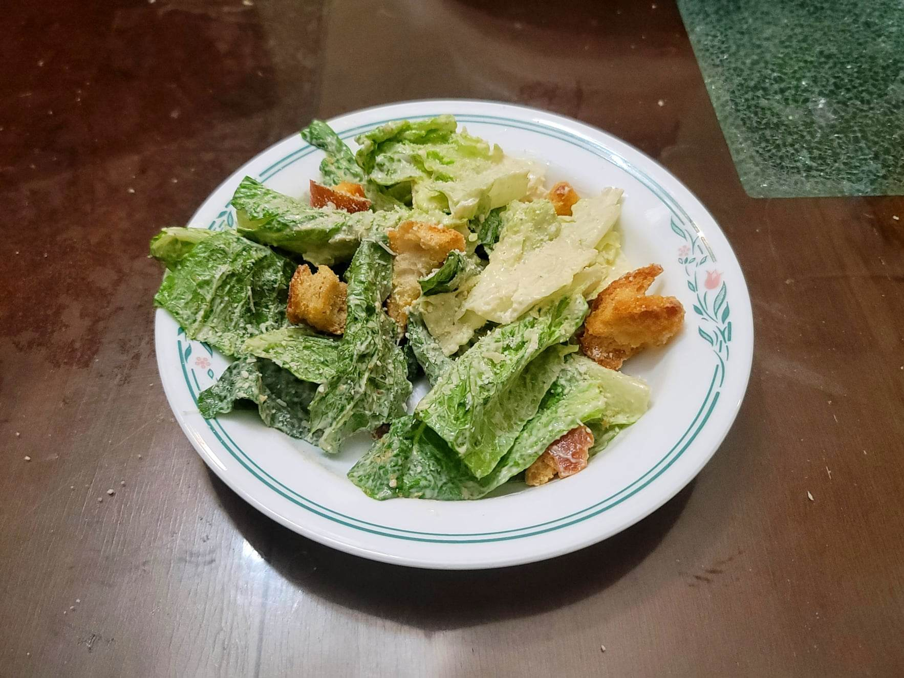

Caesar Salad

Ingredients:
Dressing:
- 6 Anchovy fillets packed in oil, drained
- 1 small clove Garlic
- 1/8~ tsp Kosher Salt
- 2 Egg yolks
- 2 tbsp Lemon juice + more to taste
- 3/4 tsp Dijon mustard
- 2 tbsp Olive oil
- 1/2 cup Vegetable oil
- 3 tbsp Finely grated parmesan
- Black pepper, to taste
Croutons:
- 3 cups Country bread, hand-torn into 1" pieces
- 3 tbsp Olive oil
Salad:
- 3 hearts Romaine lettuce, hand-torn in threes, core removed
- Parmesan, grated, to taste
Instructions:
- Mash the anchovies into a paste. Then whisk it together with the other dressing ingredients. Alternatively, just combine all the ingredients and blend them together.
- For the croutons, preheat an oven to 375 degrees Fahrenheit. Toss the bread with olive oil. Bake, tossing occasionally, for 10-15 minutes or until golden.
- To assemble the salad, combine the lettuce, croutons, and dressing into a very large bowl. Toss to combine and everything is evenly coated. Top with more parmesan. Serve immediately.